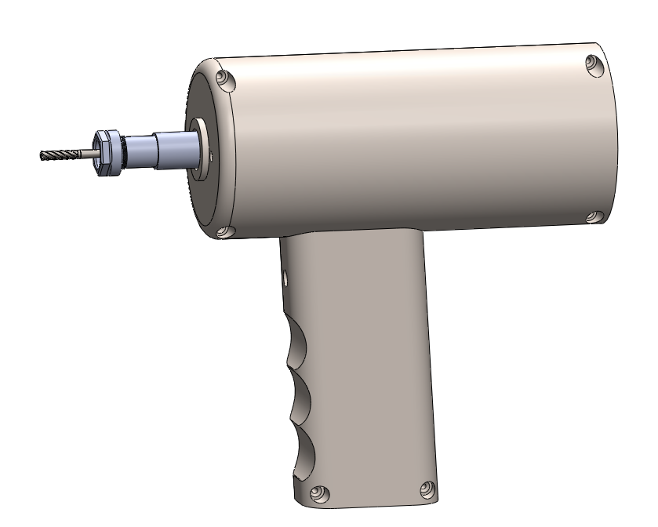
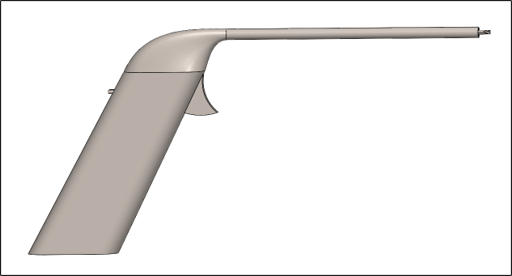
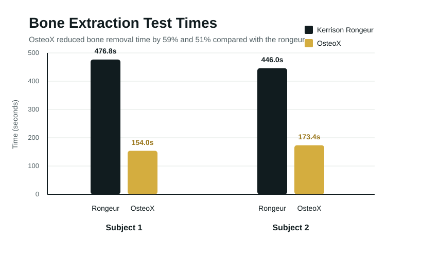
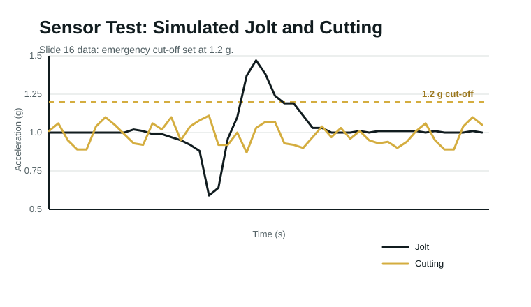
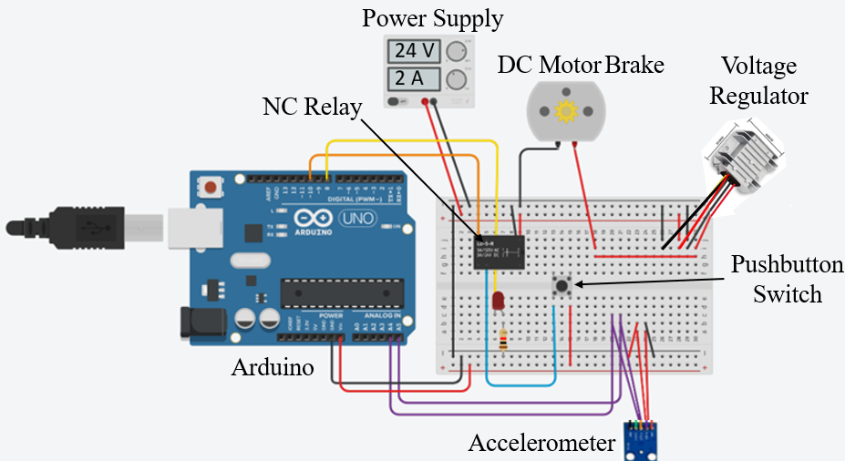
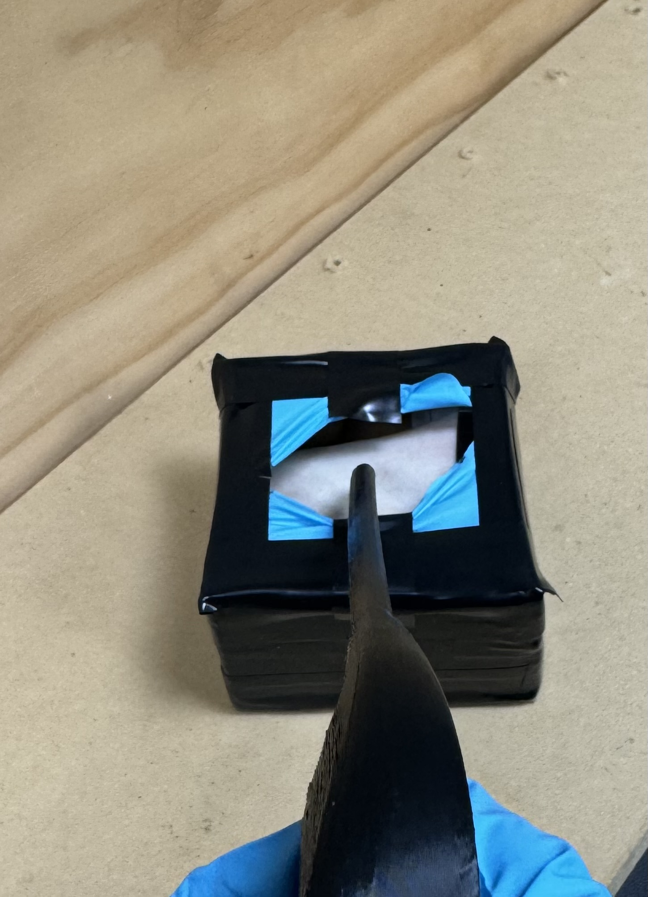
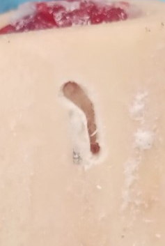
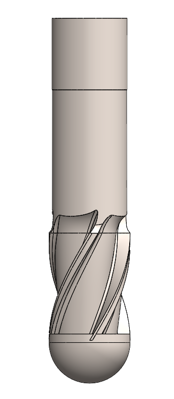

CAD & Design
Compact Surgical Tool Architecture
The works-like model used a handle, shaft, milling bit, and internal component layout to test form and function.
Engineering Projects
Detailed Project
A neurosurgical bone removal device designed to reduce procedural time while protecting underlying tissue.
Overview
OsteoX addresses debris accumulation and time constraints associated with manual Kerrison rongeurs. The design combines a compact milling tool, integrated sensing, and an emergency braking system to support controlled bone removal near sensitive tissue.


CAD & Design
The works-like model used a handle, shaft, milling bit, and internal component layout to test form and function.
Data & Results


Testing showed 59% and 51% faster bone removal than the rongeur, 100% emergency cut-off response, and passed usability validation.
Methodology
Translated neurosurgical debris and timing concerns into measurable engineering requirements.
Used a decision matrix to evaluate concept directions against safety, visibility, size, and usability.
Developed a works-like device with a motor, milling bit, accelerometer, relay, and braking system.
Ran extraction, safety, maneuverability, sterilization, sensor, and usability tests against requirements.
Analysis
The risk analysis highlighted sensor malfunction, emergency shutdown failure, and bit dullness or breakage. That pushed the design toward an integrated accelerometer cutoff, non-excited brake, and clear validation tests for tissue protection and device control.

Gallery



Contributors
More Projects

A physical prototype developed through CAD, fabrication, and hands-on iteration.

An embedded engineering project focused on sensing, control, and practical device behavior.

A design-centered engineering project exploring user needs, constraints, and prototype refinement.
Email: josephjbollinger@gmail.com
LinkedIn: linkedin.com/in/jacob-bolly
GitHub: github.com/jacobbolly